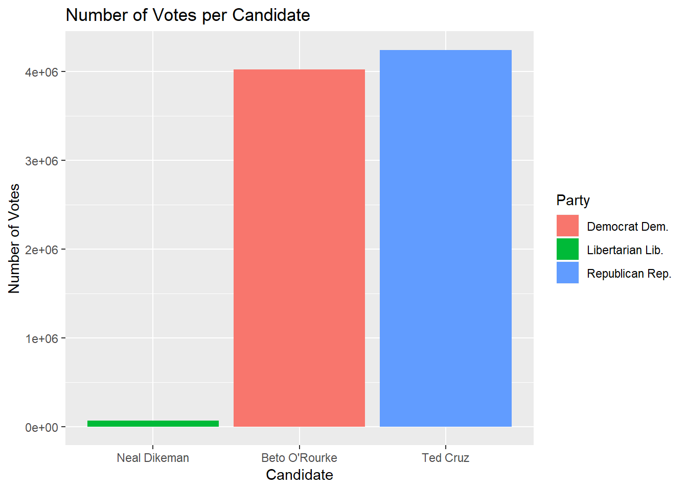

statistical testing
Courtney Chan
December 3, 2018
#Trying linear regression with dataset merged_nyt_searches
##First creating the dataset
##scraping election results from the web
###New York Times voting results by county
This seems to have created two tables from the website data.
Tidying overall table for exploratory analysis
Bar Plot of Votes per Candidate

This plot illustrates how it was a close race between the top two candidates, O’Rourke and Cruz. As Dikeman had very few votes, we decided to omit Dikeman from further analyses.
Made the first table that which we have final results for the state of texas.
Tidying county table
Made the second table which has all of the 254 county level data for Texas!
Plots for all counties

comparing these county level election results to highly searched voter election interests in google
-using search terms “Midterms” and selecting dataset from top result
##uploading county congressional district txt file
#plot for topics search per county Still figuring out how to display this ideas: 1) interactive barchart in the current long format, if we use shiny we could show how the top topics vary among counties through use of drop-down menu to select county, etc. 2) figure out we can juxtapose how the counties voted vs. topics. Use of plotly for interactivity? 3) Alternative to first option, how can we show the distribution of topics among counties instead? 4)focus on 5 biggest counties or districts? but this would be biased as it may be a metropolitan area
merged_most_searched = merged_nyt_searches %>%
select(district_num, county, health_care, immigration, medicaid, medicare, september_11_attacks, cruz, o_rourke)runnning linear regressions for all of the top five across counties topics, with outcome as number of votes for o rourke and cruz.
lm_o_hc = lm(o_rourke ~ health_care, data = merged_most_searched) %>% broom::tidy()
lm_cruz_hc = lm(cruz ~ health_care, data = merged_most_searched) %>% broom::tidy()
lm_o_hc## # A tibble: 2 x 5
## term estimate std.error statistic p.value
## <chr> <dbl> <dbl> <dbl> <dbl>
## 1 (Intercept) 55061. 22994. 2.39 0.0172
## 2 health_care 118. 1514. 0.0779 0.938lm_cruz_hc## # A tibble: 2 x 5
## term estimate std.error statistic p.value
## <chr> <dbl> <dbl> <dbl> <dbl>
## 1 (Intercept) 42026. 15655. 2.68 0.00766
## 2 health_care 118. 1031. 0.115 0.909lm_o_immigration = lm(o_rourke ~ immigration, data = merged_most_searched) %>% broom::tidy()
lm_cruz_immigration = lm(cruz ~ immigration, data = merged_most_searched) %>% broom::tidy()
lm_o_immigration## # A tibble: 2 x 5
## term estimate std.error statistic p.value
## <chr> <dbl> <dbl> <dbl> <dbl>
## 1 (Intercept) -63289. 24130. -2.62 0.00916
## 2 immigration 14426. 2732. 5.28 0.000000244lm_cruz_immigration## # A tibble: 2 x 5
## term estimate std.error statistic p.value
## <chr> <dbl> <dbl> <dbl> <dbl>
## 1 (Intercept) -40846. 16376. -2.49 0.0131
## 2 immigration 10162. 1854. 5.48 0.0000000883lm_o_caid = lm(o_rourke ~ medicaid, data = merged_most_searched) %>% broom::tidy()
lm_cruz_caid = lm(cruz ~ medicaid, data = merged_most_searched) %>% broom::tidy()
lm_o_caid## # A tibble: 2 x 5
## term estimate std.error statistic p.value
## <chr> <dbl> <dbl> <dbl> <dbl>
## 1 (Intercept) 56704. 29880. 1.90 0.0587
## 2 medicaid 3.48 4482. 0.000775 0.999lm_cruz_caid## # A tibble: 2 x 5
## term estimate std.error statistic p.value
## <chr> <dbl> <dbl> <dbl> <dbl>
## 1 (Intercept) 41756. 20343. 2.05 0.0410
## 2 medicaid 304. 3052. 0.0995 0.921lm_o_care = lm(o_rourke ~ medicare, data = merged_most_searched) %>% broom::tidy()
lm_cruz_care = lm(cruz ~ medicare, data = merged_most_searched) %>% broom::tidy()
lm_o_care## # A tibble: 2 x 5
## term estimate std.error statistic p.value
## <chr> <dbl> <dbl> <dbl> <dbl>
## 1 (Intercept) 77788. 20854. 3.73 0.000228
## 2 medicare -2612. 2364. -1.10 0.270lm_cruz_care## # A tibble: 2 x 5
## term estimate std.error statistic p.value
## <chr> <dbl> <dbl> <dbl> <dbl>
## 1 (Intercept) 56946. 14202. 4.01 0.0000764
## 2 medicare -1643. 1610. -1.02 0.308lm_o_911 = lm(o_rourke ~ september_11_attacks, data = merged_most_searched) %>% broom::tidy()
lm_cruz_911 = lm(cruz ~ september_11_attacks, data = merged_most_searched) %>% broom::tidy()
lm_o_911## # A tibble: 2 x 5
## term estimate std.error statistic p.value
## <chr> <dbl> <dbl> <dbl> <dbl>
## 1 (Intercept) -9045. 29779. -0.304 0.762
## 2 september_11_attacks 13479. 5855. 2.30 0.0220lm_cruz_911## # A tibble: 2 x 5
## term estimate std.error statistic p.value
## <chr> <dbl> <dbl> <dbl> <dbl>
## 1 (Intercept) -6246. 20232. -0.309 0.758
## 2 september_11_attacks 10235. 3978. 2.57 0.0106